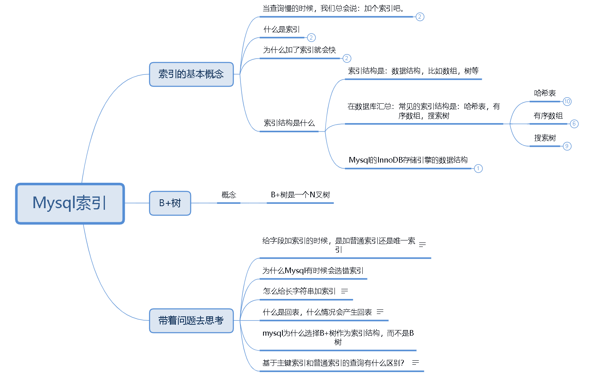
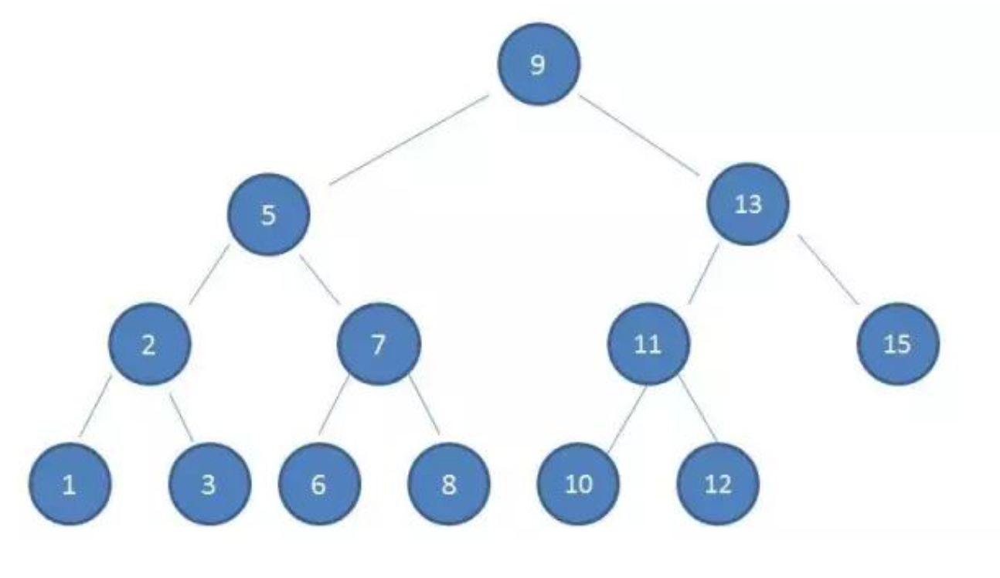
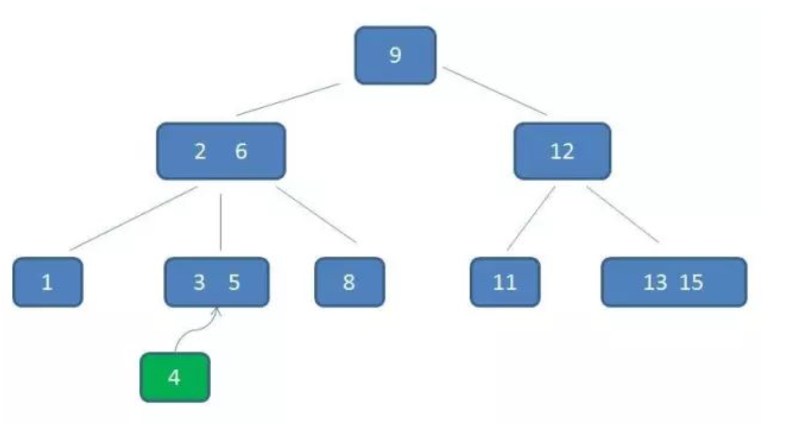
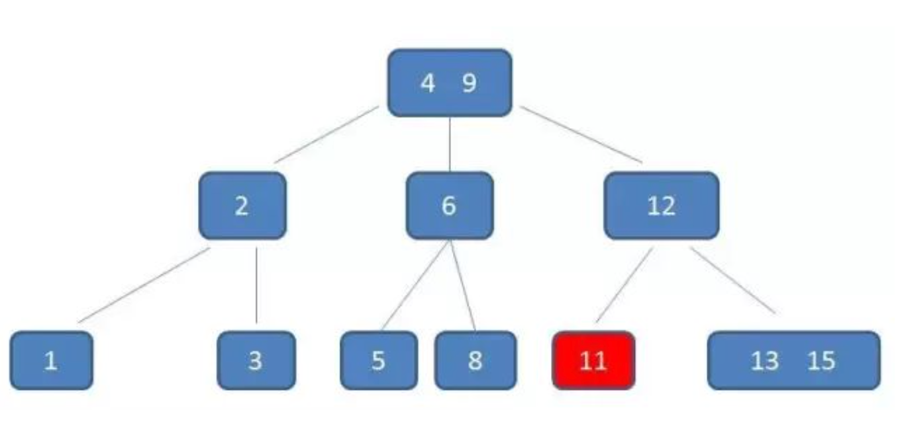
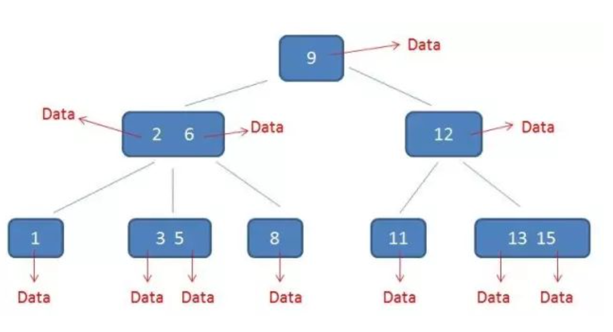
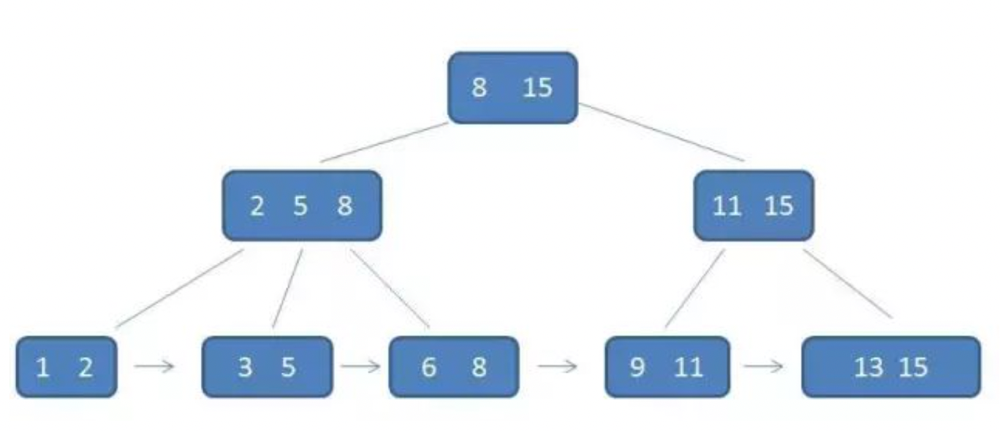

mysql的索引从入门到入土
索引的XMIND图
文件位置：点我打开
索引的常见数据结构
哈希表
- 哈希表这种结构适用于只有等值查询的场景，比如 Memcached 及其他一些 NoSQL 引擎。
有序数组
有序数组在等值查询和范围查询场景中的性能就都非常优秀。
有序数组索引只适用于静态存储引擎
搜索树
二叉搜索树：父节点左子树所有结点的值小于父节点的值，右子树所有结点的值大于父节点的值。
平衡二叉树
N叉树
InnoDB为什么选择B+树（对比其他树）
为什么选择树
树的查询效率高，还可以保持有序。
为什么不用二叉搜索树
什么是二叉搜索树（也叫二叉排序树或者二叉查找树）
以下是二叉查找树的结构：
它的特点是：
- 父节点左子树所有结点的值小于父节点的值，右子树所有结点的值大于父节点的值。
- 只有两个叉
- 查询的时间复杂度是：O(log(N))
- 从算法逻辑来讲，二叉搜索树的查找速度和比较次数都是最小的。
为什么不用二叉搜索树（查找耗磁盘IO）
因为考虑到磁盘IO的性能。
为什么这么说：InnoDB在查找的时候，是不能将所有的索引全部加载到内存中的，所以必然涉及到磁盘IO。
比如下面这个，二叉搜索树，我们想获取到10，需要经历几次磁盘IO：
答案是：4次
- 第一次磁盘IO，读取9
- 第二次磁盘IO，读取13
- 第三次磁盘IO，读取11
- 第四次磁盘IO，读取10
这样性能是很低的。
所以InnoDB并没有采用二叉搜索树来作为索引的数据结构。
但是InnoDB的设计者，又不能抛弃树这个数据结构带来的遍历，所以只能将 “瘦高” 的二叉搜索树，让它变得 “矮胖”。以便于节省磁盘IO。这就是B树的特征之一
什么是B树
什么是B树
B树 是一种多路平衡查找树，它的每一个节点最多包含m个孩子，m被称为B树的阶。
上面说了，InnoDB的设计者为了想保留树带来的便利，只能将： “瘦高” 的二叉搜索树，让它变得 “矮胖”。以便于节省磁盘IO。
下图就是一个 3阶的B树 示意图
一颗m阶的B树，它的特点是：
m阶表示每一个节点最多拥有m个孩子- 根节点至少有
2个子女 - 有
k个孩子的节点包含有k-1个元素，其中：ceil(m/2) <= k <= m，（ceil表示向上取整） - 每一个叶子节点都包含
k-1个元素，其中：ceil(m/2) <= k <= m，（ceil表示向上取整） - 所有的叶子节点都位于同一层
- 每个节点的元素从小到大排列，并且当该结点的孩子是非叶子结点时，节点中第
k-1个元素正好是k个孩子包含的元素的值域分划。
我们一一来看这些特点，其中
- 一颗
3阶的树，每个节点最多包含3个孩子，m = 3 9是根节点，有2个孩子（2,6）和12。(根节点至少2个)（2,6）这个中间节点包含2个元素：2和6，有3个孩子。2 <= k <= 312这个中间节点包含1一个元素：12，有2个孩子。满足规则- 叶子节点
1,(3,5),8,11,(13,15)位于同一层 - 每个节点的元素从小到大排列，
(3,5)在(2,6)的值域之间。
B树的等值查找
在下面的一个3阶B树中，查找5，需要经历几次磁盘IO：
答案是：三次
- 第一次磁盘IO：
9 - 第二次磁盘IO：
（2,6） - 第三次磁盘IO：
（3,5）
B树的范围查找
在下面的一个3阶B树中，查找范围是 3-11 的元素，需要经历几次磁盘IO：
答案是：好多好多次
- 3次磁盘IO后，找到范围下限：3 所在的（3,5）这个节点
- 中序遍历到 元素6
- 中序遍历到 元素8
- 中序遍历到 元素9
- 中序遍历到 元素11，遍历结束
由此可见，B树的范围查找，很繁琐。
B树的插入（自平衡）
插入比较复杂
以下面的为例子：在一个3阶的B树中，插入 4
由于 4 在 （3,5）之间。
- 这是一颗
3阶的B树，由于每个节点最多包含k-1个元素，其中2 <= k <= 3，所以每个节点可以包含1个，2个元素； - 要在
（3,5）之间插入4，（3,5）已经是2个元素了，不能在插入了。 （3,5）的父节点（2,6）也是2个元素，也不能在插入了- 根节点
9是1个元素，可以在升级为2个元素。 - 于是：
总结：
- 仅仅是插入一个元素，就让整个B树发生了连锁反应
- 虽然麻烦，但是也正因为如此，可以让B树始终保持多路平衡。（自平衡）
B树的删除（左旋）
在如下的一个3阶B树中，删除元素11
- 首先这是一颗3阶B树，由于B树的规则，每个中间节点都包含
k-1个元素和k个孩子，其中2<= k <= 3 - 所以：11删除之后，父节点12就只剩下1个孩子了，不符合规则，3阶的B树每个中间节点至少有2个孩子。
- 因为，需要找出删除11后，剩余的三个元素12,13,15的中位数，取代节点12；然后节点12下移成为孩子（左旋）
B树的卫星数据
所谓的卫星数据（Satellite Information），指的是索引元素所指向的数据记录；
在B树中，每一个节点都带有卫星数据。
为什么选择B+树
什么是B+树
B+树是基于B树的一种变体。有着比B树更高的查询性能
下面是一个3阶的B+树的示意图：节点之间含有重复元素，叶子节点还用指针连在一起
一颗m阶的B+树有以下特点：
- 有k个子树的中间节点包含有k个元素（B树中是k-1个元素）
- 每个元素不保存数据，只用来索引，所有的数据保存在叶子节点
- 所有的叶子节点包含了全部元素的信息，而且每个叶子节点都带有指向下一个节点的指针，形成了一个有序链表
- 叶子节点本身依关键字大小自小而大顺序链接
- 每一个父节点的元素都出现在子节点中，而且是子节点中最大（或最小）的元素
- 无论插入多少元素，都要保持最大元素在根节点中
B+树的卫星数据
所谓的卫星数据（Satellite Information），指的是索引元素所指向的数据记录；
在B+树中，只有叶子节点带有卫星数据。
在mysql中，表中的一行记录就是一个卫星数据。
不过需要注意的是：
- 在mysql中，主键索引的叶子结点存的是
卫星数据（就是行记录） - 在mysql中，非主键索引的叶子节点存的是
指向卫星数据的指针（就是行记录的主键id）
B+树的等值查找
在下面这颗3阶的B+树上查找元素 3，会经历几次磁盘IO：
结果：
- 第一次磁盘IO：（8,15）
- 第二次磁盘IO：（2,5,8）
- 第三次磁盘IO：（3,5）
由于B+树的中间节点并没有存放卫星数据，所以比B树更加“矮胖”，也即是说：在相同数据量的情况下，B+树会比B树访问到更少的磁盘IO。
由于 B+树 的中间节点没有存放卫星数据，所以要想拿到记录，必须访问到叶子节点。
而 B树 由于每个节点都存放了卫星数据，所以只要匹配到，就可以获取到记录。
对B树来说：最好的情况是只访问根节点就能拿到记录，最坏的情况就是访问到叶子结点。换言之：B树的查找性能不稳定
对B+树来说：由于每一次都要访问到叶子节点，所以B+树的查找性能是稳定的。
B+树的范围查找
在下面这颗3阶的B+树上，查找范围是 3-11 的元素，需要经历几次磁盘IO：
答案是：5次
- 第一次磁盘IO：找到：（8,15）
- 第二次磁盘IO：找到：（2,5,8）
- 第三次磁盘IO：找到：（3,5），此时找到范围下限：3 所在的（3,5）这个节点
- 然后通过叶子结点上的指针，直接遍历叶子节点。（3,5），（6,8），（9,11）
- 直接确定到范围
相比于B树范围查找的繁琐，B+树就简单的多了。
B+树的B树的比较
B+树相比B树的优势有三个
- IO次数更少
- 查询性能稳定
- 范围查询简便
至于插入和删除，两者大同小异。
索引分类
了解下面列出来的索引概念：
- 主键索引
- 普通索引
- 聚簇索引
- 非聚簇索引
- 二级索引
- 唯一索引
- 全文索引
- 联合索引
- 覆盖索引
- 前缀索引
主键索引和普通索引
主键索引：也叫聚簇索引，它 是一种特殊的唯一索引，不允许有空值。
普通索引：也叫二级索引，最基本的索引，没有任何限制
主键索引在InnoDB中是聚簇索引；普通索引在InnoDB中是非聚簇索引
聚簇索引和非聚簇索引
聚簇索引并不是单独的索引类型，而是一种数据存储方式，指的是：数据和对应的索引紧凑的存储在一起。
非聚簇索引指的就是：数据和索引分开存储。
举例来说：
对于InnoDB：主键索引的叶子节点存的是主键id和数据，它们是保存在一起的；非主键索引的叶子节点存的是主键id，和真实的数据是分开的。所以主键索引是聚簇索引，非主键索引是非聚簇索引。（InnoDB的索引和数据是放在同一个文件中的：数据即索引，索引即数据）
对于MyISAM：索引和记录本身就是分开存储的，是不同的文件。所以MyISAM中所有的索引都是非聚簇索引。
唯一索引
唯一索引：与”普通索引”类似，不同的就是：索引列的值必须唯一，但允许有空值。
全文索引
全文索引：仅可用于 MyISAM 表，针对较大的数据，生成全文索引很耗时耗空间。
联合索引
也叫组合索引，为了更多的提高mysql效率可建立组合索引，遵循”最左前缀“原则。
覆盖索引
当一个SQL查询语句所需要查询的字段，被所使用的的索引可以直接满足需求，不需要回表了，称之为覆盖索引
前缀索引
当需要索引的字段很长，而且该字段后半部分的选择性很低，比如邮箱地址；后面都是一样的。
对于这种我们就可以建立前缀索引：使用前缀索引，定义好长度，就可以做到既节省空间，又不用额外增加太多的查询成本。
mysql> alter table SUser add index index2(email(6));前缀索引会导致覆盖索引失效，因为前缀索引是截取后的部分做的索引，不得不在回表查一次完整的信息。
索引特点
最左匹配原则
假设有一个用户表，我们给 （name, age）加上联合索引。
如果我们要查询所有名字第一个字是“张”的人，SQL语句可能会这么写：
where name like '张%';在这种情况下，也是可以使用到这个索引的。这就是索引的最左匹配原则。
- 最左匹配原则可以是联合索引的最左N的字段，也可以是一个字符串的最左M个字符；
- 在建立联合索引的时候，如何安排索引内的字段顺序，需要仔细考量了。
索引下推
mysql 5.6 引入了 索引下推优化。可以在索引遍历的过程中，对索引中包含的字段先做判断，直接过滤掉不满足的记录，减少回表次数。
假如有一个用户表，我们给（name，age）加上联合索引。
如果我们要查询所有名字第一个字是“张”的人，并且年龄大于10岁的男人。SQL语句可能会这么写
where name like '张%' and age > 10 and male='男';对于这个语句，我们知道由于最左匹配原则，使用到了（name，age）这个索引。
然后，接下来呢？
在mysql 5.6之前，接下来就需要回表了。对扫描的每一条记录，都回表判断 age 和 male 是否满足；
在mysql 5.6之后，由于有索引下推优化，对于age的判断可以直接完成，过滤掉age不符合的记录，然后对剩下的记录在此回表判断male是否满足。（减少了回表次数）
索引潜水
英文单词：index dive
主要是用于 IN 查询语句的优化，
跟这个词语相关的，还有一个配置参数 eq_range_index_dive_limit。
MySQL5.7.3之前的版本，这个值默认是10，之后的版本，这个值默认是200。
简单的理解就是：IN 语句的数量如果少于200个，就使用索引潜水（Index dive）预估扫描行数，很精确，所以选择索引的时候就不容易出错；
如果 IN 语句的数量大于200个，就使用 索引统计（Index statistics）预估扫描行数，误差很大，所以会导致选择索引容易选错，导致性能下降
关于索引潜水，具体见：Mysql性能调优从入门到入土
普通索引默认联合主键索引
二级索引会默认与主键索引做联合索引。
为什么？
因为二级索引的叶子节点存放的就是主键。
索引比较
任何索引之间的比较，都从 增删改查 四个角度来具体分析，就不迷惑了。
普通索引和主键索引有什么区别？
主键索引的查询，不需要回表了。
普通索引的查询，如果要查询的字段没有被当前索引覆盖，是需要回表的。
针对回表的优化：
- 覆盖索引可以减少回表
- 索引下推可以减少回表
普通索引和唯一索引有什么区别？
对查询的影响
- 微乎其微。
- 普通索引的查询：定位到当前记录之后，还要继续判断下一条记录是否满足条件。
- 唯一索引的查询：定位到当前记录之后，由于是唯一的，不再需要判断下一条记录了。
不过，后面看到加锁规则这部分的时候，有一个加锁规则是：唯一索引上的范围查询，会访问到不满足查询条件的第一个值为止。
也就是说：
- 对于范围查询，普通索引和唯一索引是一样的，都需要访问下一条记录。
- 对于等值查询，唯一索引比普通索引少了一次查找下一条记录的性能消耗。
对更新的影响
参考：《mysql的日志从入门到入土》这篇文章中讲到了changebuffer：
- changebuffer（对更新的优化，对比redolog）
- changebuffer在 5.5 版本之前叫做：insert buffer，只支持插入操作；在5.5之后，支持了更新操作
- changebuffer的作用：
- 更新的时候不需要从内存中加载数据页，而是直接将更新后的记录写到changebuffer中（内存中）就可以返回了
- 那么changebuffer中的数据什么时候刷盘呢？
- 因为写入changebuffer了，一定会写入redolog，后台会定时将redolog中的数据应用到数据页中，同时也会将changebuffer的数据应用到数据页，这是两个后台线程，他俩没有任何关系。操作的都是内存中的数据页，然后刷脏页
- 具体的可以参考：《mysql的日志从入门到入土》
为什么唯一索引的更新就不能使用 change buffer，只有普通索引可以使用。
因为唯一索引的更新，需要判断当前的这个更新会不会影响到唯一索引的唯一性。
所以必须判断要将数据页加载到内存中，进行判断才可以。
change buffer适应于：写多读少的场景和写多读多的场景；
change buffer 和 redo log的联系和区别。
- change buffer减少了磁盘的随机读（减少了加载数据页的操作）
- redo log减少的磁盘的随机写（WAL机制）
前缀索引对覆盖索引的影响
我们知道覆盖索引可以减少回表，提升查询性能；
但是当我们的覆盖索引是前缀索引的时候，此时覆盖索引是不生效的。
因为前缀索引是截取后的信息作为索引，要想获取完整的字段，就不得不回表在查询一次。
合理创建索引
为什么要合理的创建索引。
因为索引很显然并不是越多越好，因为占空间，而且数据变更的时候还要多维护索引的变更，消耗性能。
那么怎么合理的创建索引呢
首先要知道，索引只能用来加快查询的速度，所以
- 索引应该建立在频繁查询的字段上，比如 where 语句后的字段，order by 的字段， join 的字段等。
那么是对所有的where，order by，join等的字段都建立索引吗？很显然不能
- 过多的索引会占用空间，而且更新的时候，还需要维护索引，消耗性能。
那什么样的字段不用建立索引呢？
- 区分度低的字段不用建立索引。
- 频繁更新的字段一般不建议当做索引，因为要维护索引，页分裂，页合并等，消耗性能。
那剩下的别的字段，就都可以建立索引了吗？也不是
- 为了节省空间，推荐建立 组合索引。
- 组合索引还有一个好处，就是可以满足最左匹配原则。
另外补充一个
- 字段长的可以前缀索引，倒序索引等。
选错索引（索引统计，强制索引）
由于索引统计的更新机制，索引统计信息不准确导致的。
解决：重新采集统计信息：analyze table
解决：手动指定索引；force index
优化器是怎么选择索引的
选择索引是优化器的工作。
而优化器选择索引的目的，是找到一个最优的执行方案，并用最小的代价去执行语句。
在数据库里面，扫描行数是影响执行代价的因素之一。扫描的行数越少，意味着访问磁盘数据的次数越少，消耗的 CPU 资源越少。
但是扫描行数并不是唯一确定索引的因素。优化器还会结合是否使用临时表、是否排序等因素进行综合判断。
怎么确定扫描行数呢？
在确定扫描行数之前，mysql 会先看看 索引基数。索引基数决定了要不要使用索引
- 如果索引基数太小，就会弃用索引。
- 当索引基数比较大的时候，要不要走这个索引，还得看扫描行数，回表，子查询等等，最后优化器根据预估的成本决定是否走这个索引。
什么是索引基数呢
MySQL 在真正开始执行语句之前，并不能精确地知道满足这个条件的记录有多少条，而只能根据统计信息来估算记录数。
这个统计信息就是索引的“区分度”。
显然，一个索引上不同的值越多，这个索引的区分度就越好。
而一个索引上不同的值的个数，我们称之为“基数”（cardinality）。
也就是说，这个基数越大，索引的区分度越好。
我们可以使用 show index 方法，看到一个索引的基数。
mysql> show index from t;
+-------+------------+----------+--------------+-------------+-----------+-------------+----------+--------+------+------------+---------+---------------+---------+------------+
| Table | Non_unique | Key_name | Seq_in_index | Column_name | Collation | Cardinality | Sub_part | Packed | Null | Index_type | Comment | Index_comment | Visible | Expression |
+-------+------------+----------+--------------+-------------+-----------+-------------+----------+--------+------+------------+---------+---------------+---------+------------+
| t | 0 | PRIMARY | 1 | id | A | 6 | NULL | NULL | | BTREE | | | YES | NULL |
| t | 1 | c | 1 | c | A | 6 | NULL | NULL | YES | BTREE | | | YES | NULL |
+-------+------------+----------+--------------+-------------+-----------+-------------+----------+--------+------+------------+---------+---------------+---------+------------+
2 rows in set (0.03 sec)MySQL 是怎样得到索引的基数的呢？
MySQL 使用采样统计的方法进行统计索引的基数。
为什么要采样统计呢？因为把整张表取出来一行行统计，虽然可以得到精确的结果，但是代价太高了，所以只能选择“采样统计”。
采样统计的时候，InnoDB 默认会选择 N 个数据页，统计这些页面上的不同值，得到一个平均值，然后乘以这个索引的页面数，就得到了这个索引的基数。
而数据表是会持续更新的，索引统计信息也不会固定不变。所以，当变更的数据行数超过 1/M 的时候，会自动触发重新做一次索引统计。
举个例子：
取n=3个数据页统计，假设共有10个索引数据页； page1：10个不同值； page2：20个不同值； page3：15 个不同值； 索引基数=(10+20+15)/3*10=150；
上文所说的 N 和 M 具体是多少呢？
在 MySQL 中，有两种存储索引统计的方式，可以通过设置参数 innodb_stats_persistent 的值来选择：
- 设置为 on 的时候，表示统计信息会持久化存储。这时，默认的 N 是 20，M 是 10。
- 设置为 off 的时候，表示统计信息只存储在内存中。这时，默认的 N 是 8，M 是 16。
由于是采样统计，所以不管 N 是 20 还是 8，这个基数都是很容易不准的。
怎么确定扫描行数呢？
知道了索引基数，优化器还要继续预估执行这个语句，具体需要扫描多少行
通过 explain 命令可以看到优化器预估的扫描行数，至于mysql是怎么预估扫描行数的，这里就不在展开了。
怎么解决选错索引的问题
如果你通过 explain 命令，看到是由于 预估行数 错误，导致了mysql选错了索引。
可以使用：analyze table t 命令，可以用来重新统计索引信息。
mysql> analyze table t;
+-------+---------+----------+----------+
| Table | Op | Msg_type | Msg_text |
+-------+---------+----------+----------+
| zs.t | analyze | status | OK |
+-------+---------+----------+----------+
1 row in set (0.04 sec)另外，我们知道索引的选择，并不是仅仅靠 扫描行数 这一个影响因素来决定的
如果在实际的生产环境中，我们发现使用 索引a 就是比 索引b 有更好的性能
我们可以使用 force index 强制这个sql语句使用索引a，而不是索引b
索引排序（order by）
在日常的开发过程中，经常会使用order by语句，那么排序的原理是什么呢？
排序分为两种情况
- 排序的字段有索引
- 排序的字段没有索引
有索引的排序
我们知道索引是有序的，所以有索引的排序会直接使用索引；
直接使用索引排序的话，explain结果中是不会有 Using filesort 的
结果中有 Using filesort ，表示的就是需要排序，而且没有用到索引
没有索引的排序
没有索引的排序，相对来说复杂一下。
一个语句是否使用了排序，可以通过：explain命令查看，结果中有 Using filesort ，表示的就是需要排序。
MySQL 会给每个线程分配一块内存用于排序，称为 sort_buffer。
sort_buffer是什么
MySQL 会给每个线程分配一块内存用于排序，称为 sort_buffer；
sort_buffer既然是内存区域，就不可能无限的扩大，是可以通过参数sort_buffer_size控制的
sort buffer有多大（内部排序和外部排序）
通过参数sort_buffer_size控制的，默认是：262144（公司是：8388608）
sort_buffer_size，就是 MySQL 为排序开辟的内存（sort_buffer）的大小。
如果要排序的数据量小于 sort_buffer_size，排序就在内存中完成。 这叫做：内部排序
但如果排序数据量太大，内存放不下，则不得不利用磁盘临时文件辅助排序。这叫做：外部排序
内存放不下时，就需要使用外部排序，外部排序一般使用归并排序算法。
可以这么简单理解，MySQL 将需要排序的数据分成 N 份，每一份单独排序后存在这些临时文件中。然后把这 N 个有序文件再合并成一个有序的大文件。
内部排序：使用快速排序
外部排序：使用归并排序
全字段排序
示例数据
CREATE TABLE `t` (
`id` int(11) NOT NULL,
`city` varchar(16) NOT NULL,
`name` varchar(16) NOT NULL,
`age` int(11) NOT NULL,
`addr` varchar(128) DEFAULT NULL,
PRIMARY KEY (`id`),
KEY `city` (`city`)
) ENGINE=InnoDB;
-- 初始化10条数据当我们执行下面的查询语句的时候
select city,name,age from t where city='杭州' order by name limit 1000 ;它的排序执行流程如下：
- 初始化 sort_buffer，确定放入 name、city、age 这三个字段；
- 从索引 city 找到第一个满足 city=’杭州’条件的主键 id；
- 到主键 id 索引取出整行，取 name、city、age 三个字段的值，存入 sort_buffer 中
- 从索引 city 取下一个记录的主键 id；
- 重复步骤 3、4 直到 city 的值不满足查询条件为止；
- 对 sort_buffer 中的数据按照字段 name 做快速排序；
- 按照排序结果取前 1000 行返回给客户端。
在上面这个过程里面，只对原表的数据读了一遍，剩下的操作都是在 sort_buffer 和临时文件中执行的。
但这个算法有一个问题，就是如果查询要返回的字段很多的话，那么 sort_buffer 里面要放的字段数太多，这样内存里能够同时放下的行数很少，要分成很多个临时文件，排序的性能会很差。
那么，如果 MySQL 认为排序的单行长度太大会怎么做呢？
rowId排序
如果 MySQL 认为排序的单行长度太大会怎么做呢？
max_length_for_sort_data：是 MySQL 中专门控制用于排序的行数据的长度的一个参数。
它的意思是，如果单行的长度超过这个值，MySQL 就认为单行太大，要换一个算法。
示例数据
CREATE TABLE `t` (
`id` int(11) NOT NULL,
`city` varchar(16) NOT NULL,
`name` varchar(16) NOT NULL,
`age` int(11) NOT NULL,
`addr` varchar(128) DEFAULT NULL,
PRIMARY KEY (`id`),
KEY `city` (`city`)
) ENGINE=InnoDB;
-- 初始化10条数据当我们执行下面的查询语句的时候
select city,name,age from t where city='杭州' order by name limit 1000 ;city、name、age 这三个字段的定义总长度是 36，我把 max_length_for_sort_data 设置为 16，我们再来看看计算过程有什么改变。
SET max_length_for_sort_data = 16;新的算法放入 sort_buffer 的字段，只有要排序的列（即 name 字段）和主键 id。
但这时，排序的结果就因为少了 city 和 age 字段的值，不能直接返回了，整个执行流程就变成如下所示的样子：
- 初始化 sort_buffer，确定放入两个字段，即 name 和 id；
- 从索引 city 找到第一个满足 city=’杭州’条件的主键 id；
- 到主键 id 索引取出整行，取 name、id 这两个字段，存入 sort_buffer 中；
- 从索引 city 取下一个记录的主键 id；
- 重复步骤 3、4 直到不满足 city=’杭州’条件为止；
- 对 sort_buffer 中的数据按照字段 name 进行排序；
- 遍历排序结果，取前 1000 行，并按照 id 的值回到原表中取出 city、name 和 age 三个字段返回给客户端。
全字段排序 VS rowid 排序
- MySQL 如果觉得排序内存太小，会影响排序效率，会采用 rowid 排序算法，这样排序过程中一次可以排序更多行，但是需要回表
- MySQL 认为内存足够大，会优先选择全字段排序，把需要的字段都放到 sort_buffer 中，可以减少回表
索引为什么不生效
以下三种情况，都会影响索引的使用
- 条件字段使用函数
- 隐式类型转换
- 隐式字符编码转换
条件字段函数操作会影响索引
-- 查询创建时间是7月份的记录，created_time有索引
select * from t where month(created_time) = 7;由于加了 month() 函数操作，created_time索引树里面，并不认识7，所以MySQL 无法再使用索引快速定位功能，而只能使用全索引扫描。
select * from t where id + 1 = 5;虽然这个加 1 操作并不会改变主键索引的有序性，但是 MySQL 优化器还是不能用 id 索引快速定位到 id=4 这一行。
所以，需要你在写 SQL 语句的时候，手动改写成 where id = 5 -1 才可以。
隐式类型转换
这个坑，今天刚踩过，表里对于单号 order_no 有索引，order_no 字段是varchar类型，但是我的语句是这么写的
mysql> select * from t where order_no=110717;explain 的结果显示：这条语句需要走全表扫描
因为：order_no 字段是varchar类型，而我的查询条件里用到的是整型。所以mysql会默认用到类型转换，导致索引失效
字符串和数字做比较的话，是将字符串转换成数字；所以，上面那个语句等同于
mysql> select * from t where CAST(order_no signed int)=110717;这也就明白了，为什么不会走索引了。
然后考虑下面这个语句，会走主键索引吗
mysql> select * from t where id='11';答案是：会走索引，因为：字符串和数字做比较的话，是将字符串转换成数字，所以没有对条件字段使用函数。索引不会失效
隐式字符编码转换
如果关联的两张表，使用的字符集不同的话，比如一个使用utf8，一个使用utf8mb4； 所以做表连接查询的时候用不上关联字段的索引。
为什么字符集不一样，不能用索引呢？
因为字符集 utf8mb4 是 utf8 的超集，所以当这两个类型的字符串在做比较的时候，MySQL 内部的操作是，先把 utf8 字符串转成 utf8mb4 字符集，再做比较。
（自动类型转换的时候，为了避免数据在转换过程中由于截断导致数据错误，也都是“按数据长度增加的方向”进行转换的。）
InnoB的索引模型（B+树）
复习B+树
每一个索引在 InnoDB 里面对应一棵 B+ 树。在复习一下B+树
下面是一个3阶的B+树的示意图：
- 节点之间含有重复元素
- 叶子节点还用指针连在一起
接下来：
- 我们考虑各个索引在InnoDB中具体的B+树结构是什么样子的
- 这些索引是怎么维护的（插入数据，删除数据，更新数据对索引的影响，页分裂，页合并）
- 这些索引是怎么使用的（等值查询，范围查询）
案例数据
准备一张表：
CREATE TABLE `user` (
`id` int(11) NOT NULL,
`name` varchar(16) NOT NULL,
`age` int(11) NOT NULL,
`city` varchar(16) NOT NULL,
`address` varchar(128) DEFAULT NULL,
PRIMARY KEY (`id`),
KEY `city` (`city`),
KEY `name_age`(`name`,`age`)
) ENGINE=InnoDB;- 表里有一个主键 id
- 表里有一个普通索引 city
- 表里有一个联合索引 name_age
- 接下来，我们看看，不停的向表里写入数据，会发生什么
重要声明：
- 我们知道mysql的数据是按照 数据页 来进行存储的，对于索引来说，同样也是 数据页 存储的。
- 一个数据页是 16KB，所以一个数据库能存放的元素是有限的。
- 在测试的时候：我们假设
id是 int 类型，占4个字节name是 varchar 类型，因为是不定长的，假设 name 不论写入什么，都占8个字节age是 int 类型，占4个字节city是 varchar 类型，因为是不定长的，假设 city 不论写入什么，都占8个字节address是 varchar 类型，因为是不定长的，假设 address 不论写入什么，都占8个字节
- 正常情况下，一个数据页是16KB，我们这里假设，一个数据页只有：
36字节- 意味着：一个数据页最多能存9个id索引元素(4x9=36)；最多能存4个city索引元素(8x4=32)，最多能存3个 name_age 联合索引元素(12x3=36);
主键索引
我们上边介绍的B+树本身就是一个目录，或者说本身就是一个索引。它有两个特点：
使用记录主键值的大小进行记录和数据页的排序，这包括三个方面的含义：
- 数据页中的记录是按照主键的大小顺序排成一个单向链表。
- 各个 存放用户记录的数据页 也是 根据 数据页中用户记录的主键大小 顺序排成一个双向链表。
- 存放 目录项记录的数据页 分为不同的层次，在同一层次中的页也是根据页中目录项记录的主键大小顺序排成一个双向链表。
B+树的叶子节点存储的是完整的用户记录。所谓完整的用户记录，就是指这个记录中存储了所有列的值（包括隐藏列）。
我们把具有这两种特性的B+树称为聚簇索引，所有完整的用户记录都存放在这个聚簇索引的叶子节点处。这种聚簇索引并不需要我们在MySQL语句中显式的使用INDEX语句去创建（后边会介绍索引相关的语句），InnoDB存储引擎会自动的为我们创建聚簇索引。另外有趣的一点是，在InnoDB存储引擎中，聚簇索引就是数据的存储方式（所有的用户记录都存储在了叶子节点），也就是所谓的索引即数据，数据即索引。
普通索引
联合索引
B+树按照name和age列的大小进行排序，这个包含两层含义：
- 先把各个记录和页按照
name列进行排序。 - 在记录的
name列相同的情况下，采用age列进行排序
索引维护
索引维护（更新，页分裂，页合并）
为什么我们一般在建表的时候都会创建一个自增主键，及时表中有业务唯一的id，也会创建一个自增主键？
1、因为主键只会自增，在B+树中一直都是往后写的，不会触发页分裂；但是如果删除过多的话，会触发页合并；
2、要考虑业务唯一的id的长度，比如身份证号，如果用身份证号作为主键，比直接使用整型自增的主键占用的字节数要多，这样每一个页存放的数据就会少，每个页存的数据少了，这样查询的时候，效率就会低。 同时主键长度越小，普通索引的叶子节点就越小，普通索引占用的空间也就越小。
3、所以，从性能和存储空间方面考量，自增主键往往是更合理的选择。
索引的页分裂和页合并是怎么导致的，会有什么影响？具体的分裂和合并的过程是什么样子的？
为什么mysql的b+树，在非叶子节点中，也保留了双向列表